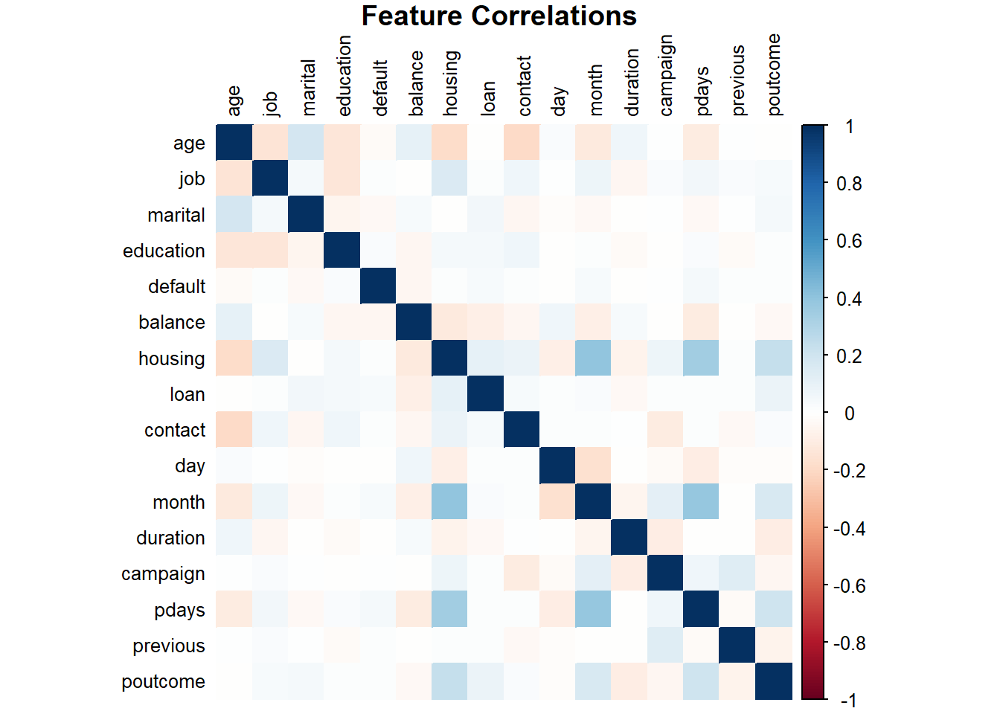
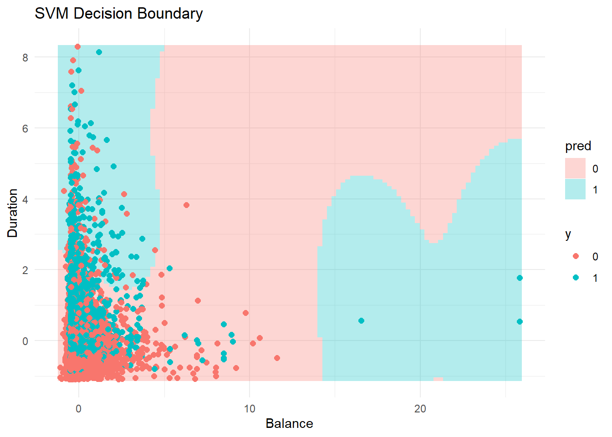

Predicting Term Deposit Subscriptions: A Supervised Learning Approach
Introduction
In today’s competitive financial industry, effective marketing strategies are critical for retaining customers and driving growth. One of the most pressing challenges faced by banks is optimizing outreach efforts to target clients who are most likely to respond positively to specific campaigns. Inefficient marketing not only wastes resources but can also lead to customer fatigue. A 2022 report by McKinsey & Company highlights that excessive, untargeted outreach reduces customer trust and engagement over time (McKinsey & Company, 2022). This issue is particularly pronounced in sectors such as banking, where customers are inundated with financial offers and promotions. To address this, data-driven marketing strategies have become essential for maximizing campaign effectiveness while maintaining customer satisfaction.
The Bank Marketing dataset, provided by the UCI Machine Learning Repository, reflects these real-world challenges by recording detailed information about clients of a Portuguese banking institution. This dataset includes attributes such as client demographics, financial status, and previous interactions with marketing campaigns, as well as the outcome of whether they subscribed to a term deposit. The importance of this problem lies in identifying the right clients to target, which can help banks reduce costs, improve conversion rates, and ultimately enhance their competitive edge in the industry.
A 2022 Deloitte study on financial services noted that successful customer retention strategies, including targeted marketing, can improve long-term profitability by up to 25% (Deloitte, 2022). Subscription-based financial products such as term deposits are a cornerstone of customer retention strategies, and predictive modeling can offer banks actionable insights to achieve this goal.
In this project, I aim to use supervised machine learning techniques to predict whether a client will subscribe to a term deposit. Specifically, I will employ two distinct supervised learning algorithms—K-Nearest Neighbors (KNN) and Support Vector Machine (SVM)—to build predictive models and evaluate their performance. Both methods offer unique strengths in capturing patterns within labeled data, enabling robust predictions. Using metrics such as accuracy, precision, recall, and F1-score, Iwill measure and compare the models’ effectiveness, with a particular focus on addressing class imbalance in the data. The findings of this project are expected to not only improve marketing efficiency for financial institutions but also provide a deeper understanding of how client characteristics influence subscription behavior.
Main Question
Which model, KNN or SVM, best predicts whether a a client will subscribe to a term deposit or not?
Methodology
K-Nearest Neighbors (KNN)
KNN is a simple, non-parametric algorithm that classifies an observation based on the majority class of its “k” nearest neighbors in the feature space. It assumes that similar observations are likely to belong to the same class. The distance between data points is typically measured using the Euclidean distance formula:
\[ d(x, y) = \sqrt{\sum_{i=1}^n (x_i - y_i)^2} \]
Prediction Formula:
For a new observation \(x_{new}\):
- Compute the distance between \(x_{new}\) and all observations in the training set.
- Identify the \(k\) nearest neighbors based on these distances.
- Assign \(x_{new}\) to the class most frequent among these \(k\) neighbors.
Advantages:
- Easy to implement and interpret.
- Effective for smaller datasets with well-separated classes.
Disadvantages:
- Computationally expensive for large datasets, as it requires calculating distances for all observations.
- Sensitive to irrelevant features and class imbalance.
Application in Project:
I will experiment with different values of \(k\) to find the optimal number of neighbors. Cross-validation will be used to evaluate the model’s performance, and I will preprocess the data (e.g., normalization) to ensure that features are on a comparable scale.
Support Vector Machine (SVM)
SVM is a robust classification algorithm that works by finding a hyperplane that best separates the data points into two classes. It maximizes the margin between the closest points (support vectors) of each class to the hyperplane. The decision boundary is represented as:
\[ f(x)=w^Tx+b \]
where \(w\) is the weight vector, x represents the input features, and b is the bias term. SVM optimizes the following objective:
\[ \begin{aligned} & \text{minimize}_{w, b} \quad \frac{1}{2} \| \mathbf{w} \|^2 \\ & \text{subject to } \quad y_i (\mathbf{w}^\top \mathbf{x}_i - b) \geq 1 \quad \forall i \in \{1, \ldots, n\} \end{aligned} \]
Kernel Trick:
For non-linear separable data, SVM uses kernel functions (e.g., linear, polynomial, radial basis function) to map the data into a higher-dimensional space, making it linearly separable.
Advantages:
- Effective in high-dimensional spaces.
- Works well with non-linear boundaries using appropriate kernels.
- Robust to overfitting in many cases due to regularization.
Disadvantages:
Computationally expensive for large datasets. Choosing the right kernel and hyperparameters (e.g., \(C\), \(\gamma\)) requires careful tuning.
Application in Project:
I will use SVM with various kernels, such as linear and radial basis function (RBF), to find the best fit for the dataset. Hyperparameter optimization (e.g., tuning for \(C\) and \(\gamma\)) will be performed to improve performance. Cross-validation will be used to ensure generalizability.
Data Analysis
Feature Selection and Data Preprocessing with Frequency Encoding
The dataset is from UC Irvine Machine Learning Repository with 17 variables and reduced from 45211 to 7842 observations by omitting entries with missing values. The dataset used for this analysis includes demographic, financial, and marketing-related features, all of which were carefully considered during feature selection. Binary variables such as housing, loan, default, and y were retained as they represent important binary decisions, particularly relevant in the context of financial services. These variables were converted to numeric values, where “yes” was encoded as 1 and “no” as 0. This transformation ensures compatibility with machine learning models while preserving the original meaning of these variables.
Categorical variables like job, education, marital, and contact were frequency encoded. Frequency encoding replaces each category with its proportion in the dataset, thereby retaining the relationship between the dataset distribution and the importance of the category without increasing dimensionality. Unlike one-hot encoding, which generates additional columns, frequency encoding keeps the feature space manageable and avoids potential overfitting caused by high-dimensional data.
Continuous variables such as age, balance, duration, and campaign were standardized to ensure all features contribute equally to machine learning models that are sensitive to the magnitude of input features, such as Support Vector Machines (SVM) or K-Nearest Neighbors (KNN). Standardization transforms each feature to have a mean of 0 and a standard deviation of 1, enabling better numerical stability and ensuring fair weight distribution across variables during model training.
The resulting dataset includes binary variables encoded as numeric values (0/1), frequency-encoded categorical variables, and scaled continuous variables. All missing values, originally represented as “unknown,” were either removed or imputed, depending on the extent of missingness. No features were excluded in this step, as all variables were deemed potentially valuable for predicting whether a client will subscribe to a term deposit. The correlation matrix below also helps verify the lack of multicollinearity or redundant features.
In summary, the final preprocessed dataset is clean, fully numeric, and standardized, with all features prepared for effective use in model training and evaluation. This approach ensures that the dataset retains its predictive potential while addressing the challenges of high dimensionality and feature scale inconsistency.
Results
I proceed to train our model on the 80% training data, and then record its prediction error on left out 20% testing data for both KNN and SVM (Linear and RBF). The KNN model was tuned with the optimal K value and the SVM models were tuned with the optimal cost and/or gamma values. The following are the evaluation metrics for each model.
Confusion Matrix for Evaluation Set
\(\textbf{Confusion Matrix: KNN}\) \[ \begin{array}{c|c|c} & \textbf{Predicted No} & \textbf{Predicted Yes} \\ \hline \textbf{Actual No} & 1116 & 189 \\ \textbf{Actual Yes} & 95 & 168 \\ \end{array} \] \(\textbf{Confusion Matrix: SVM (RBF)}\) \[ \begin{array}{c|c|c} & \textbf{Predicted No} & \textbf{Predicted Yes} \\ \hline \textbf{Actual No} & 1122 & 173 \\ \textbf{Actual Yes} & 89 & 184 \\ \end{array} \] \(\textbf{Confusion Matrix: SVM (Linear)}\) \[ \begin{array}{c|c|c} & \textbf{Predicted No} & \textbf{Predicted Yes} \\ \hline \textbf{Actual No} & 1121 & 179 \\ \textbf{Actual Yes} & 90 & 178 \\ \end{array} \]
Confusion Matrix for Full Data Set
I chose to keep use the SVM model with the radial basis function kernel since its Precision and Accuracy was noticeable better than the linear kernel’s metrics. The KNN and SVM (RBF) models was applied onto the full data set to checks its performance as seen below.
\(\textbf{Confusion Matrix: KNN}\) \[ \begin{array}{c|c|c} & \textbf{Predicted No} & \textbf{Predicted Yes} \\ \hline \textbf{Actual No} & 5663 & 872 \\ \textbf{Actual Yes} & 393 & 914 \\ \end{array} \] \(\textbf{Confusion Matrix: SVM (RBF)}\) \[ \begin{array}{c|c|c} & \textbf{Predicted No} & \textbf{Predicted Yes} \\ \hline \textbf{Actual No} & 5773 & 677 \\ \textbf{Actual Yes} & 283 & 1109 \\ \end{array} \] \(\textbf{Model Performance Metrics on Full Data Set}\)
| Metric | KNN | SVM..RBF. |
|---|---|---|
| Accuracy | 0.8387 | 0.8776 |
| Precision | 0.8666 | 0.8950 |
| Recall | 0.9351 | 0.9533 |
| F1-Score | 0.8995 | 0.9232 |

This is a sample SVM plot of two features with the fitted boundary.
Model Evaluation
The two models, KNN and SVM (using the RBF kernel), were trained and evaluated on the full dataset. Both models demonstrated strong performance, with slight variations in their respective metrics. The KNN model achieved an accuracy of 0.8387 and a precision of 0.8666, highlighting its effectiveness in minimizing false positives. This is particularly valuable for marketing campaigns where resources are limited, ensuring that clients predicted to subscribe are more likely to actually do so, thereby reducing wasted efforts on uninterested clients.
However, KNN’s recall (0.9351) was slightly lower compared to SVM, indicating that KNN might miss some potential subscribers. While this could result in missed revenue opportunities, the model’s higher precision makes it suitable for scenarios where avoiding false positives is critical. Additionally, KNN’s simplicity and ease of interpretation further solidify its role in contexts where explainability is essential.
The SVM model using the RBF kernel outperformed KNN in recall, achieving a rate of 0.9533, the highest among both models. This indicates SVM’s strength in identifying potential clients who are likely to subscribe, reducing false negatives. In marketing applications, this high recall ensures a wider reach and minimizes the risk of overlooking potential customers, although it comes at the cost of slightly lower precision (0.8950). This trade-off may result in contacting a few uninterested clients, which is acceptable in scenarios where maximizing client engagement is a priority.
The decision boundary visualization for SVM highlights its ability to model non-linear relationships within the data. This adaptability enables it to capture complex patterns in client behavior that simpler models, like KNN, may fail to recognize.
Conclusion
This study aimed to evaluate the effectiveness of two machine learning models—KNN and SVM with an RBF kernel—for predicting whether a client would subscribe to a term deposit. The analysis showed that while both models performed well, the SVM model with the RBF kernel outperformed the KNN model across all key performance metrics.
The SVM model achieved an accuracy of 87.76%, precision of 89.50%, recall of 95.33%, and an F1-score of 92.32%, outperforming KNN on every metric. Its superior recall highlights its ability to identify potential subscribers more effectively, reducing the number of false negatives. Additionally, its high precision ensures that the predicted subscribers are more likely to actually subscribe, which minimizes wasted marketing efforts. The SVM’s adaptability to capture non-linear relationships in the data likely contributed to its superior performance, making it a strong choice for this task.
In comparison, the KNN model achieved an accuracy of 83.87%, precision of 86.66%, recall of 93.51%, and an F1-score of 89.95%. While the KNN model showed reasonable performance, it lagged behind SVM on all fronts. Its slightly lower recall and precision indicate that it may miss some potential subscribers while also predicting a higher number of false positives compared to SVM. However, it is important to note that KNN remains a simpler and more interpretable model, which could still be valuable in situations where model explainability is critical.
Challenges and Limitations
During the analysis, several challenges were encountered:
- Imbalanced Data: The dataset was imbalanced, with a significantly higher proportion of clients not subscribing. While stratified train-test splits helped mitigate this, imbalanced data inherently impacts model performance and could bias predictions toward the majority class.
- SVM Complexity: SVM required careful tuning of hyperparameters (e.g., cost and gamma) and was computationally intensive, especially when training on the full dataset. However, these efforts were justified by its superior performance.
Future Improvements
To further enhance model performance and scalability, the following improvements are recommended:
- Feature Engineering: Additional feature engineering or feature selection techniques, such as principal component analysis (PCA) or recursive feature elimination, could reduce dimensionality and improve efficiency.
- Addressing Class Imbalance: Techniques like SMOTE or class-weighted loss functions could help address class imbalance and improve the models’ ability to handle minority class predictions.
- Exploration of Advanced Models: Incorporating ensemble methods, such as Random Forests or Gradient Boosting Machines, might yield even better predictive performance.
- Model Deployment Considerations: Given SVM’s computational complexity, it may be worthwhile to explore approximate SVM implementations or alternatives like logistic regression for real-time deployment.
Final Conclusion
Based on the results, the SVM model with the RBF kernel is the clear winner for this application, delivering superior performance across accuracy, precision, recall, and F1-score. Its ability to balance identifying potential subscribers while maintaining high precision makes it the most reliable option for this marketing task. While KNN offers simplicity and interpretability, its lower performance metrics indicate that it is less suitable for this particular problem. In conclusion, SVM should be prioritized for deployment, especially in contexts where both recall and precision are critical to achieving marketing success.
References
Moro, S., Rita, P., & Cortez, P. (2014). Bank Marketing [Dataset]. UCI Machine Learning Repository. https://doi.org/10.24432/C5K306.
McKinsey & Company. (2022). The state of customer care in 2022. Retrieved from https://shorturl.at/LsiQ7
Deloitte. (2022). Why all organizations need a Customer Service Strategy, now!. Retrieved from https://shorturl.at/aQdB3
James, G., Witten, D., Hastie, T., & Tibshirani, R. (2021). An introduction to statistical learning: With applications in R (2nd ed.). https://doi.org/10.1007/978-1-0716-1418-1